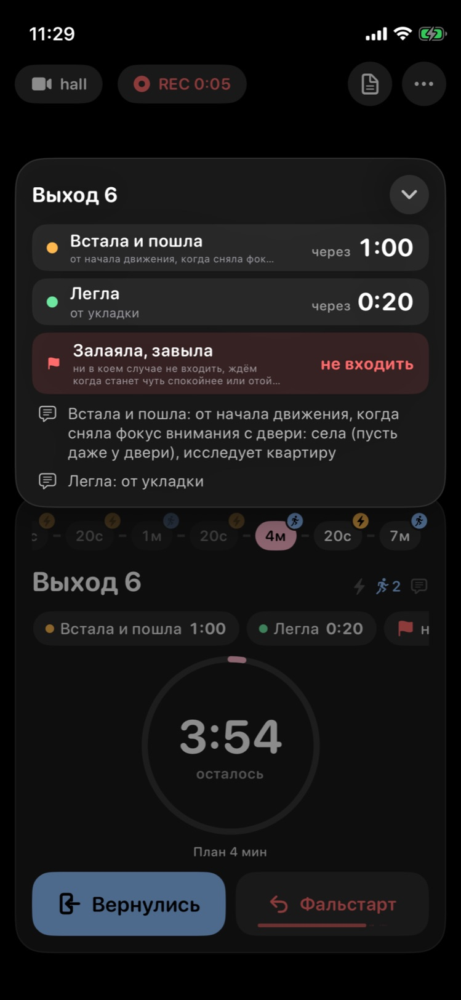
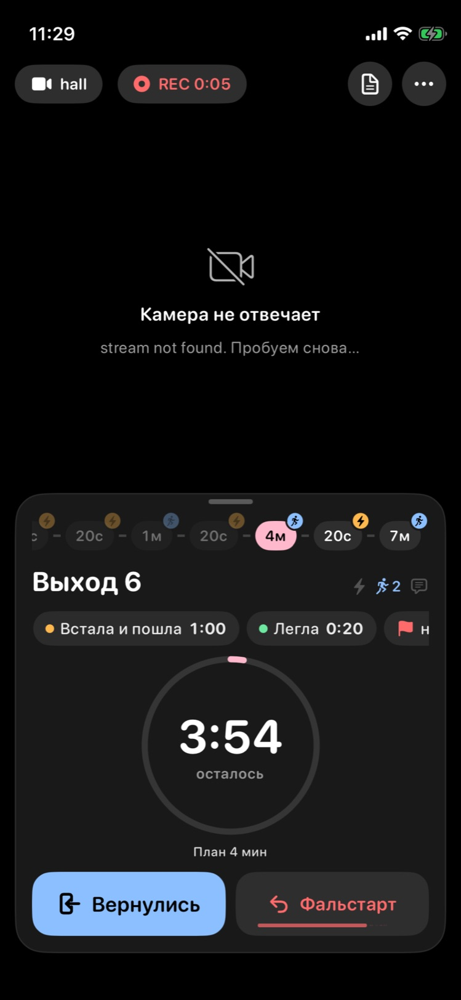

Что должна объяснить плашка
🚩 Если залаяла, завыла - ни в коем случае не входить, ждём когда станет чуть спокойнее или отойдёт от двери и входим когда молчала 30 секунд. Если скребёт дверь - ждём отхода от двери и возвращаемся на хорошем отвлечении от двери
В правиле два случая, и в каждом есть два шага: сначала ждём, потом входим, когда…. Если нужно глянуть за пару секунд во время выхода, вся суть такая:
| Если | Ждём | Входим |
|---|---|---|
| Залаяла, завыла | станет чуть спокойнее или отойдёт от двери | молчала 30 секунд |
| Скребёт дверь | отойдёт от двери | хорошо отвлеклась от двери |
Сейчас из всего этого крупно видно только «Залаяла, завыла — не входить». Когда входить, мелко и обрезано, а второго случая нет вообще. Все макеты ниже собраны из этого же текста. Переключатель «Текст тренера» вверху показывает, как вариант справится с коротким правилом другого тренера, а «Ширина» — как он ляжет в панель на Mac и Windows.
Как сейчас iPhone 13 mini, реальный снимок


- Второго случая нет. «Скребёт дверь — ждём отхода…» оказывается за обрезкой, заголовок говорит только «Залаяла, завыла».
- Не видно, когда входить. «Входим, когда молчала 30 секунд» самое важное, но это третья строка мелкого серого текста, и её срезает.
- «Не входить» сказано два раза. Красное справа и ещё раз в начале серого текста («ни в коем случае не входить»), и на это уходит место.
- Чип на карточке не виден на маленьком iPhone, а «не входить» без контекста звучит как команда «не входите сейчас».
- Windows ещё хуже:
StopPlateпоказывает подробности одной строкой с многоточием. На Mac та же плашка, что на iPhone.
Плашка в шторке выхода
Шторка такая же, как в приложении: два условия раннего входа, под ними блок 🚩, ниже заметки. Меняется только блок 🚩. На Mac и Windows этот же блок стоит в правой панели (переключите «Ширина»).
Как ранний вход: «Залаяла — тишина 0:30»
Каждый случай становится отдельной красной плашкой в той же грамматике, что «Встала и пошла — через 1:00». Справа крупно то, чего ждём для входа, а под событием мелко, что делать пока ждём. Над плашками подпись «Не входить, если».
- Похоже на соседние плашки, учить новое не нужно: справа всегда «когда входить».
- «0:30» читается одним взглядом, как «1:00» у раннего входа.
- «тишина 0:30» легко спутать с «через 0:30» (от лая), а слово «подряд» туда не помещается.
- У случая без времени («скребёт») правая часть пустая, и условие уходит в мелкий текст.
- Разбор: делим правило на предложения по «Если…», внутри ищем «ждём…», «входим / возвращаемся…» и «N секунд».
Два шага: «Ждём → Входим»
рекомендуюОдна красная рамка «🚩 Не входить, если», внутри по карточке на случай. В каждой две ступеньки: ⏳ Ждём и 🚪 Входим, со словами тренера без пересказа. Время из текста дублируется зелёной меткой «0:30». На широкой панели Mac/Windows случаи стоят рядом.
- Объясняет порядок действий, а не только запрет: что делать сейчас и что будет сигналом войти.
- Слова тренера целиком, ничего не обрезано и не перефразировано, видны оба случая.
- Хорошо деградирует: если в тексте только «ждём тишины», остаётся одна ступенька.
- Самый высокий блок: на mini шторка прокручивается, заметки уходят ниже.
- Разбор тот же, что у F1: предложения по «Если», глаголы «ждём / ждите», «входим / заходим / возвращаемся».
Схема: шкала тишины и «отошла от двери»
Правило нарисовано. Для лая показана шкала: каждый лай сбрасывает отсчёт, и только 30 секунд тишины подряд ведут к двери. Для «скребёт» маленькая сцена: скребёт → отошла → отвлеклась. Под рисунком слова тренера.
- Единственный вариант, который показывает главный подвох: тишина подряд, пауза в 10 секунд между лаем не считается.
- Запоминается: увидев схему раз-другой, читать её уже не нужно.
- «Каждый лай — заново» и «подряд» добавляет приложение, у тренера этих слов нет. Надо, чтобы тренер это подтвердил.
- Картинки есть только для знакомых случаев (лай/вой, скребёт). Для остальных показываются ступеньки как в F2.
Счётчик тишины: кнопка «Лает»
новая функцияПлашка не только объясняет, но и считает за вас. Залаяла — жмёте «Лает», и пошёл отсчёт тишины 0:30. Снова залаяла — жмёте ещё раз, и отсчёт начинается заново. На 0:30 плашка становится зелёной: «можно входить». Кнопку можно нажимать прямо в чипе на карточке (K4 ниже), шторку открывать не нужно. Попробуйте нажать.
- Не нужно считать 30 секунд в голове, пока нервничаешь у двери.
- Нажатия можно писать в историю тренировки («лай 11:31:05, 11:31:20»), и тренер увидит, когда и сколько она лаяла.
- Это новая функция, а не визуал: кнопка, синхронизация с Mac и Windows, запись в историю.
- Ещё одно нажатие, пока смотришь в камеру. Есть риск спутать с «Вернулись».
- Потом можно попробовать, чтобы приложение само слышало лай по звуку камеры. Сейчас этого нет.
Текст тренера целиком, с цветом
Минимальная правка: убираем обрезку и показываем правило полностью, по абзацу на случай. Событие жирным, «не входить» красным, «входим, когда…» зелёным.
- Ничего не нужно разбирать: подойдёт любой текст любого тренера.
- Дёшево, правка на час во всех трёх приложениях.
- Это всё равно абзац, а во время выхода его некогда читать. Порядок «ждём → входим» глазами не видно.
Чип на карточке
Карточка видна всю тренировку, а шторку открывают по тапу. Сейчас красный чип стоит последним и на mini уходит за край. Он нужен как напоминание «здесь есть правило 🚩». Объяснение живёт в шторке.
Выбор
Отметьте вариант плашки и чипа и напишите, что поменять. Кнопка сохранит выбор рядом со страницей (Design/red-flag-lab/choice.json), так что потом достаточно написать мне «выбрал».